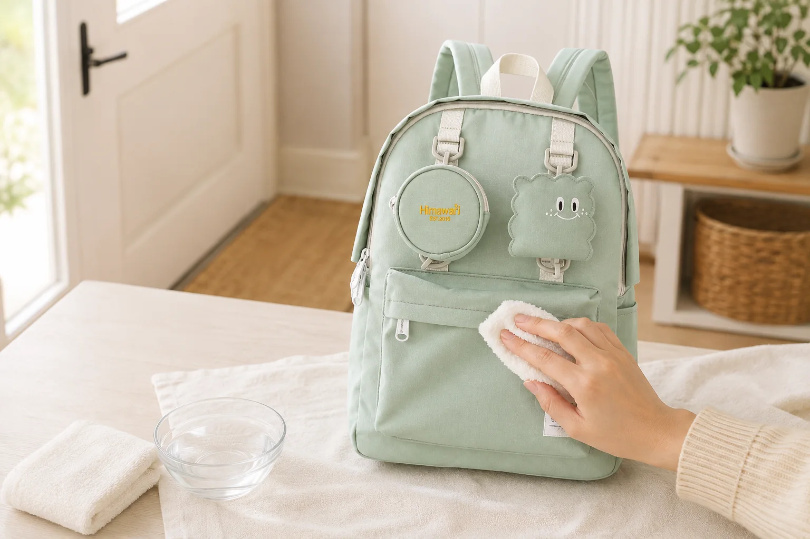

밝은색 백팩 얼룩 관리법: 번지기 전에 확인할 6단계

민트, 아이보리, 라벤더처럼 밝은색 백팩은 옷차림에 산뜻한 인상을 더하지만 작은 먼지나 손자국이 비교적 빨리 보입니다. 얼룩을 발견한 순간 세게 문지르기보다 소재와 오염 상태를 먼저 나누어 살피면 자국을 넓히는 실수를 줄일 수 있습니다. 아래 순서는 가방 전체 세탁이 아니라 일상에서 생긴 작은 표면 오염을 관리하기 위한 기본 점검법입니다.
1. 내용물을 비우고 관리 표시부터 확인하세요
가방 속 물건을 모두 꺼내고 포켓까지 비웁니다. 제품 라벨이나 판매 페이지의 세탁·관리 안내에서 물 사용 가능 여부, 표백제나 기계 세탁 금지 여부를 확인하세요. 겉감뿐 아니라 안감, 코팅과 장식 소재가 다를 수 있으므로 외관만 보고 세탁 방법을 단정하지 않는 것이 중요합니다.
원단별 기본 점검 순서는 백팩 소재별 표면 관리법에서 함께 확인할 수 있습니다.
2. 오염을 마른 것과 젖은 것으로 구분하세요
흙먼지나 모래처럼 마른 오염은 젖은 천을 대기 전에 충분히 말린 뒤 부드러운 솔이나 마른 천으로 털어냅니다. 반대로 음료처럼 젖은 오염은 깨끗한 흰 천으로 바깥에서 안쪽 방향으로 가볍게 눌러 흡수합니다. 처음부터 넓게 문지르면 얼룩의 경계가 커지거나 원단 결 사이로 더 스며들 수 있습니다.
3. 눈에 띄지 않는 곳에서 먼저 시험하세요
물이나 제품 안내에서 허용한 중성 세정액을 써야 한다면, 바닥 모서리처럼 잘 보이지 않는 작은 부위에 먼저 묻혀봅니다. 천에 색이 묻어나지 않는지, 마른 뒤 테두리 자국이나 광택 변화가 생기지 않는지 충분히 기다려 확인하세요. 색과 표면이 그대로일 때만 오염 부위로 범위를 넓힙니다.
4. 흰 천으로 짧게 눌러 닦으세요
색이 있는 수건은 이염 여부를 알아보기 어려우므로 깨끗한 흰 천이 편리합니다. 천을 흠뻑 적시지 말고 물기가 흐르지 않을 정도로 짠 뒤 얼룩의 바깥쪽부터 중앙으로 짧게 눌러 닦습니다. 한 번에 지우려고 힘을 주기보다 천의 깨끗한 면을 바꾸어가며 여러 번 나누어 확인하세요.
5. 지퍼·라벨·장식은 따로 다루세요
원단을 닦는 과정에서 금속 장식, 인쇄 라벨, 접착 장식과 지퍼 틈까지 젖지 않도록 범위를 좁힙니다. 지퍼 주변의 먼지는 물을 묻히기 전에 마른 솔로 제거하고, 원단이 끼었을 때는 억지로 당기지 않습니다. 부자재 점검은 백팩 지퍼·버클 관리법을 참고하세요.
6. 형태를 잡아 그늘에서 말리세요
마른 수건으로 남은 수분을 눌러 흡수한 다음 지퍼와 포켓을 열고 통풍이 되는 그늘에 둡니다. 가방 안에는 색이 묻어나지 않는 흰 종이나 깨끗한 수건을 느슨하게 넣어 모양을 받칠 수 있습니다. 열풍이나 뜨거운 난방기 가까이는 피하고 안쪽까지 완전히 마른 뒤 내용물을 다시 넣으세요.
외출 전후 1분 관리 체크리스트
- 바닥과 등판에 묻은 마른 먼지를 먼저 털었나요?
- 물병 뚜껑과 화장품 용기가 잠겼나요?
- 펜과 음식은 작은 파우치에 분리했나요?
- 작은 얼룩을 발견한 날짜와 원인을 기억하나요?
- 부분 세척 후 안쪽까지 충분히 말렸나요?
밝은색 가방은 오염을 완전히 피하기보다 작은 자국을 오래 방치하지 않는 습관이 더 실용적입니다. 색상을 고르는 단계라면 자주 입는 옷으로 백팩 색상 고르는 법도 함께 살펴보세요. 실제 제품의 소재와 관리법은 Himawari No.0422 민트 제품 정보에서 확인할 수 있습니다.
참고·안내
- Himawari No.0422 민트 제품 정보
- 제품마다 원단·코팅·장식이 다르므로 세척 전 해당 제품의 관리 표시를 우선 확인하세요.
- 대표 이미지는 Himawari No.0422 제품 사진을 참조해 만든 연출 이미지입니다.
자주 묻는 질문
밝은색 백팩 얼룩은 바로 물로 문질러도 되나요?
얼룩의 성질과 제품 관리 표시를 먼저 확인하세요. 마른 먼지는 털어내고, 물을 쓸 수 있는 소재라면 눈에 띄지 않는 곳에서 시험한 뒤 젖은 천으로 눌러 닦는 편이 안전합니다.
물티슈로 가방을 닦아도 되나요?
물티슈에는 향료나 세정 성분이 들어 있을 수 있어 원단에 자국을 남길 수 있습니다. 제품 안내를 확인하고 깨끗한 흰 천과 소량의 물부터 사용하는 편이 좋습니다.
부분 세척 후 드라이어로 말려도 되나요?
강한 열은 원단이나 코팅, 부자재에 영향을 줄 수 있습니다. 직사광선과 열풍을 피하고 형태를 잡아 통풍이 되는 그늘에서 충분히 말리세요.